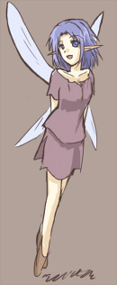

シルバーセカンド開発日誌
■
2013-06-08 (土) 片道勇者+ その3▼【今週の落書き】

片道勇者TRPGリプレイ用の落書き。
来週は番外編と通常編で一挙2話掲載予定です！ お楽しみに！
【片道勇者+】
現在も引き続き、まずは難易度が高くてバグが多発しそうな部分、
要するに『ショートカット機能』を実装中です！
ショートカット機能も一段落完成したように見せかけて
全然正常動作しないので、ここから検証作業が始まります。
しかし、操作性的にはだいぶ向上した感じですね、
公開を焦らず最初から作っておけばよかったと公開！
いやまあ、いつ完全に動作するかはまったく分かりませんけど！
【ショートカット。位置は仮です】

メニュー画面で1～9キーを押すとショートカット登録でき、
マップ上でそのキーを0.4秒くらい押し続けると
【使用】または【投げ】または【装備変更】が行われます。
最初は押した直後に起動するようにしてみたんですが、
暴発や押し間違いが多すぎてかなりヤバかったのでこのような形を採用しました。
キーの中身を忘れても、ちょん押しすることで使用するアイテム名などが
表示されるようになっています。オプション枠が足りないので
パッド対応は今のところ未定ですが、入れた方がいいよなとは思ってます。
L1R1ボタンでショートカット番号変更、L2ボタンで起動とか。
しかし入れる場合はフォーマット大幅変更により
またたくさんいじる必要が出てくるのでさらにゴールが遠く！
後からのゲームのインターフェース拡張は地獄なんです！本当に！でも！入れる！
以下は気になった拍手コメントです、皆さまいつも本当にありがとうございます！
＞場違いなのですが拍手ついでに。 404(NotFound)の時に、右上の表示が
＞「SilverSecond」じゃなくて「-SilveSecond-」になってますよ！
＞rよ何処へ… .
な、なんということでしょう！ 直しておきます！
「ｒ、ｒじゃないか、こんなところでボロボロになって
……本当に……すまん……！」
ｒ「ワンワン！」 ■
2013-06-01 (土) 片道勇者+ その2▼【今週の落書き】

TRPGリプレイより狼の海賊っぽい何か。
ワルそうなキャラも魅力的に描けるようになりたい！
【片道勇者+ 案】
まだまだ細かいシステム部分での様々なアイデアをいただいています！
皆さま、本当にありがとうございます。
作者がうっかりテキトーに決めたところはさすがに全部ツッコまれてて、
やっぱり長くやり込んでくださってるプレイヤーの人には
かなわないなあと思わされるばかりです。
で、今は技術的に一番難しそうですがプレイアビリティに
大きく関わりそうな【ショートカット機能】を実装中です。
しかしこれまで放置してきたことからも分かるように難易度が高い！
何が難しいって、公開当初から謎のアイテム増殖バグが多発していたくらい
今のアイテム周りの処理がバグの温床で処理がカオスになっている上、
装備に固有ID振ってないので仕様がまるっと大きく変わるのが大変な点です。
完全に私の設計ミス！ ここから何ヶ月にもわたって謎バグと
戦い続ける運命になるリスクが非常に大きいとは思いつつ、
それでもやっぱり必要だと思いますので入れることにしました。
何より、インターフェース強化で今後のテストプレイもラクになりますしね！
設定したショートカットについては、周回してもクラス別に
記憶され続けるようにしておくか、毎回リセットするか迷い中です。
それと、全体的なバランス調整も行いたいところです。
後半、無敵超人になってしまうのはやはり面白くない！
どこかに弱点や欠点を抱えたままどう補うか考えることを面白くしたいですね。
【片道勇者TRPG 第七話『荒野へ』公開！】
ついにライブラの街を脱出して次の街へ向かうパーティー一同！
しかしクーの心に残った傷は深く、フォータクルからの依頼の箱も
ダメージを受けて真っ赤に染まってしまっているという微妙な現状。
この状況の果てにあるものは……！？
今回は水浴びシーンもあります！ が、期待するとガッカリ！
【片道勇者TRPG 公式ページ】
今回も暖かいキャラクター投票＆コメント、誠にありがとうございます！
コメントは全部参加PLの皆さんにも届いておりますので、
よろしければ第七回でもぜひどうぞ。
以下は気になった拍手コメント返信です。
たくさんのご意見ご感想、誠にありがとうございます。
＞「カラオケに行こう！」をVer1.00に更新しましたので、
＞おすすめユーザーデータの差し替えをお願いいたします。
差し替えておきました！ 他の方も、シル学ユーザデータ関連の更新については
拍手コメントから対応いたしますので、「安定したっぽいので入れ替えて！」
というご希望があれば、お手数ですがぜひ連絡よろしくお願いします。
＞案とはちょっと違いますが、片道勇者の攻略Wikiにシルバーランスという
＞武器が載っていたのですがあれは今の片道にはもうない武器なんですか？
ランダムテーブルに入れ忘れたまま放置されてた気がしますので
次の更新時にまた入れておきます！ というかどこから分かったんだー！？
もしかしたら入手手段があるのを私が忘れてるというオチでしょうか。 【今週の落書きは休憩です】
先週はまた色々あっちこっち走り回ったりしていて
落書きすら準備できなかった不始末です！
でも一段落したのでこの辺からまた元の開発に戻れそうです。
【片道勇者+】
前回のコメントからたくさんネタをいただきました！ありがとうございます！
特にクラス案が山盛りで「こんなにどうすればいいんだー！？」状態で
コメントお寄せくださった皆さまには深く感謝申し上げます！
【クラス案】
やっぱり最弱キャラである【観光客】的なクラスの希望が第一でした！
ローグライクでは伝統なんだそうです。オリジナルの方は分かりませんが、
立ち位置としては前回「村人」って自分が呼んでたヤツとほぼ同じでしょうか。
（要するに最弱クラス）
あとは飛行系やモンスター系も複数ありました、妖精とか人魚とか。
他には犯罪者（初期の海賊みたいに自動で手配状態）や魔王なども！
飛行系は扱いが難しそうですね。山際によってピンチになるたびに
飛ぶプレイになりそうという致命的な欠陥が……というか今でも一緒じゃん！
うーん、山登りは最短2ターンかかるように変更しようかな……。
他にもちょっとチューンしたいところが色々あります。
【地形】
あと水泳スキルを活用できる地形が欲しい、も多かったです！
湿地や沼地などのご意見が複数。これも検討してみます。
【特殊なモード】
特殊なモードのご要望などは、キャンペーンや
突発イベントなどで対応できるといいかな？ と思っています。
ただ、マップパーツを増やすと乱数が変わるので、マップ構造が
通常版と変わってしまうのがちょっとした懸念です。
もうちょっと使う乱数きっちり分けておけばよかった……。
もしかしたら新版で世界の攻略情報が
一通り変わってしまうかもしれませんがご容赦下さい！
それを中和できるくらい遊びやすくなりそうな、
または面白くなりそうな新要素の一部は、
通常版のほうにも取り込みたいですね。
私のいまの技術やまとめ力でこれは面白く
仕上げられそうだと思った案はバシバシ使わせていただきます！
皆さま、本当にありがとうございました！
なお、これからも引き続き片道勇者+の案は募集中です！
こんなのどう？といったものがあれば、ぜひよろしくお願いいたします。
来週からはガッツリゲーム開発の予定です！
また、来週は片道勇者TRPG第七話も更新予定！
今度は旅の途中のちょっとカオスなお話です、お楽しみに。
■
2013-05-18 (土) 片道勇者 英語ロゴ+▼【今週の落書き（？）】
シンガポールで行われる
Casual Connect Indie Showcase 2013(当時のｱｰｶｲﾌﾞ)に
片道勇者が選出されたというめでたいお話など色々あったので、
片道勇者英語版（One Way Heroics）のロゴを慌てて作りました。
ここからまた微調整していくと思います。
今週はそんなプロモーション関連の他に、色々な人に会ってお話をうかがったり、
未来のゲーム開発者の皆さんのためのアレコレに時間を割いた一週間でした。
来週もプロモーション周りや教育的指導のために時間を割くことになりそうです。
【片道勇者TRPG 第六話『絶望の街』公開！】
永久図書館を脱出したパーティ一同！
しかしライブラの街はすでに半分闇に包まれており、
そこは闇の影響を受けた元住人が徘徊する、
滅びた街と化していました……。
今回は（また火事場ドロボウしながらの）街からの脱出編です。
【片道勇者TRPG 公式ページ】
推定読者３０００人の皆さまの中から寄せられた
キャラクター投票＆コメント、誠にありがとうございます！
コメントは全て参加PLの皆さんにも届いておりますので、
今回もよろしければぜひどうぞ。
【片道勇者+（プラス）？】
これはまだぼんやりとした話なんですが、片道勇者海外進出（有料）にあたって、
「片道勇者+」的なものを作ることになるかもしれない話が出てきました。
そこはまあ、向こうの人の心象とか色々ありますしね？
で、それが海外専用になるか、日本でも出すか分かりませんが、
それにそなえて、強化ネタを今ちょっとぼんやり考え中です。
もし日本で出るとしてもほぼ「お布施版」になりそうだし
今さらもう遊ばないよって人もたくさんいそうで恐縮なんですけれど。
もう一段いじる可能性が出てきたということで、せっかくなので、
遊んでみたいクラス（職業）や敵のネタなどがあったら、
ぜひコメントお寄せください。
ひとまず、最弱クラスの「村人」的なものはぜひ入れたいですね。
レベルアップ時に６０％の確率で
「貫禄が上がった！」（※パラメータは上がってない）
って出てくるとか。
翻訳量が極端に増えると私の財布やリリース日がどんどんさみしくなるので、
なるべくテキスト増加はほどほどの方向で考えようと思ってます。
あと片道勇者のベースであるウディタにも何だかバグが出てきているので
しばらくそっちも含めて従来のソフト修正の日々になりそうです。ぐおおお。
以下は拍手コメントです、いつも本当にありがとうございます！
（前回の落書きに対して）
＞ゲ●じゃないシーナさんなんて… ゲ●は、ゲ●じゃないんですか？！
油断してたらアップ直後、「苗木にゲ■が」という
コメントを頂きましたのでご安心ください。ひどい。 ■
2013-01-11 (金) 片道勇者Ver1.48他▼しばらく更新がありませんでしたが元気です。
先週はお仕事的な作業がメインで新しい内容はなかったので、
これといって報告することがありませんでした。
というかまだその作業が終わってません！

少しだけ具体的に言うと、片道勇者のテキストを整理していたのがメインで、
あとはちょっとだけ今後のために内部処理を色々いじったり
片道勇者のバグを修正したりしていました。
片道勇者のバグ修正内容は以下の通りです。
【片道勇者Ver1.48 更新内容】
・ネット機能がオフの場合は日替わり更新処理をしないよう修正(Ver1.48)
・コメントなどに<STR>が残るバグが発生したのを修正(1.45で対応)
おそらく「『map』にやってきた」などと出るのも直ったと思うのですが、
まだ発生するようでしたらご連絡下さい。
・魔王に状態異常を付与すると変なメッセージが出るバグ修正（1.46のみ発生)
・【状態異常】 ある敵を状態異常の状態で倒すと、その直後に出現した
別キャラが同じ状態異常を引きずったまま出現してしまうバグに対処（特に魔王）。
発生原因の予測が正しければ、これで直っているはずです。
・一部のキャラの好感度最高時や特定条件時、仲間と会話しようとすると
会話ウィンドウが一瞬で消える現象が起きる現象に対応。
（２つの別の原因で発生するバグでした。他にも原因あるかも……）
・聖弓には「魔王の結界を破る力がない」と説明文に明記。
・隠しボスのブレスが壁を消滅させた跡を攻撃すると、
壁の判定が残っていて何もないところにダメージが通るバグを修正（たぶん）
・隠しボスに火炎付与をすると特定条件で永遠に継続ダメージが発生して
勝手に倒せてしまうバグを修正
|
セーブデータを送ってくださった方、誠にありがとうございました！
一番バグの解決に近いのは、状況再現できるセーブデータが
あることなので、本当に助かります。
【シル学ユーザデータの差し替えご報告】
シルフェイド学院物語、ご報告をいただいた、
おすすめユーザデータの以下のデータを最新版に更新しました。
・「アウルと水晶と……」
・「特典アイテムまとめ」
拍手コメントなどからご一報いただければ確実に対応できますので
「そろそろ最新版に入れ替えて欲しいんだけどー！？」という方は
誠にお手数ですが、ご一報よろしくお願いいたします。
「XX（ユーザデータ名）を更新しましたので差し替えお願いします！」
だけで構いません。
気付いたものに関しては、ユーザデータが更新されていて、
安定していそうなものなら随時差し替えさせていただくつもりです。
（更新した分で新たなバグが見つかって
すぐ再修正がかかっているユーザデータも多いようなので、
更新したそばからすぐ差し替えるのはちょっと恐いなーと思ってます）
そんなこんなで新年早々慌ただしい状況ですが、
今年も一年、よろしくお願いします。
５年ぶりくらいに開発中の作品を何も抱えてない状態になって
ようやく気楽になったので、これまでやれなかったことを
今の内に片付けたいですね。ウディタの英語版企画も来月からやりたい！ ■
2012-12-15 (土) 片道勇者Ver1.38▼
ずっと喉が痛かったりで症状をひきずっているウルフです。
それと回復中に新たにいくつか追加の用事がありまして、
これからまたちょっとだけ忙しくなりそうです。
ユーザデータのボリューム自体は極小になりそうな予感で、
今から土下座の準備をせざるを得ないんですが、巨大ユーザデータが
フルコースだと仮定した場合、なんとかイカの塩辛５切れ分くらいの量は
用意できるよう進めていきたいと思います。少なくてもピリっとさせたい！
少し急ぐ必要が出てきたので、テスト中だった片道勇者の更新分を適用しました。
更新内容は以下の通りです。
【片道勇者 Ver1.40更新内容】
・やさしい魔王が闇にのまれても今度こそワープするよう修正（されたらいいなあ）
【片道勇者 Ver1.37＆1.38更新内容】
・安定性向上のためネット接続の仕様を変更しました。
大量のデータ移行に伴い、12/13夕方～12/15午前中までの
「クリア者一覧データ」が12/13時点のデータに上書きされている部分が
ございますが、どうかご了承ください。データ移行はすでに完了しています。
・時の女神でのセーブから復帰した時に、即、闇にのまれることがあるバグを修正
・闇にのまれたときの処理を修正、やさしい魔王が消えにくくなります（たぶん）
・防具の付与「重装」で速度が上昇していたバグを修正
・傭兵の死亡時に剣を持っていく際の好感度条件が一段階ずれていたミスを修正
・一部のアイテムを使用した直後に仲間がボスを倒してしまうと、
アイテムの機能が発動しないまま消滅していた仕様を修正
・「フリーダ王女を救え」のキャンペーンでまだ街のBGMや名前がズレるバグを緩和
・世界をマニュアル入力した際、END選択時に効果音が鳴るように修正
・巨大なサイズのリプレイが存在するときに
「リプレイ」一覧を開くと重くなっていましたが、
キャッシュ機能を付けて処理時間を大幅削減することに成功しました。
最初の一回目を開こうとした場合は従来通り一時停止してしまいますが、
その次からは一瞬で一覧が表示されるようになります。
・「リプレイ」再生中、ウサギが縦に切れて表示される現象を修正
余談ですが、12/13時点で「クリアされた世界」の数は81030世界、
プレイされた世界は、261032世界でした。
以下はいただいた拍手へのコメントです。
どうもご心配をおかけしました。
＞「煙狼さんそれノロウイルスやないか」
＞「それ、ノロわれてるんじゃあ……」 .
ご心配お掛けしています！
お医者さんにみてもらったらお腹に聴診器当てられて
「うーんあと24時間くらい寝てりゃ治るんでね？」
って言われただけなので、結局何だったのか
全然分かりませんが、たぶん大丈夫だと思います！
言われた通り、寝たら治りました。
このぶっちゃけ具合が実に頼りになりますね。■
2012-12-02 (日) 片道勇者おまけ話▼
どんどんイーリスのセリフ作るのにも慣れてきました。
というだけでは本当に何もないので、
今回はゲームに反映できなかった脳内キャラ紹介コーナー！
ゲームって考えるだけ考えるんだけど
使われないネタの方が多い気がします。
【片道勇者より勇者Ｃ】
＜勇者Ｃの経歴＞
彼女は剣の扱いに長けた、とある国の心優しい王女――
だったが、国が『闇』にのまれ、なんとか自分一人で
ゲーム開始のスタート国へと逃げ延びてきた。
その途中、両親と弟は闇にのまれてしまう。
ペットの特徴を取った場合は、ペットと一緒に逃げ延びたことになる。
その後はスタート国のヴィクター王のもとで保護されていたが、
禁断の術を扱える勇者の血筋として、何かをなさねばと考える。
この力が世界を救うカギになるはずだと心のどこかで信じながら……。
（※ただし、別に勇者の力がなくても魔王は倒せる）
ある日、ヴィクター王より「闇を止めるためには魔王を倒すしかない」
と教えられ、それを信じて旅に出ることを決心。
なぜ王がそんなことを知っていたのか、そこには気付かなかった。
なお、保護されたのはフリーダ王女の拉致後だったため、
フリーダ王女との面識はない。フリーダ王女よりは年下で、
フリーダ王女が２０代前半、勇者Ｃは１７歳くらい。
一緒にいれば仲良くなれたかもしれない。
◆髪色は薄い栗色。背中と腋がとんでもなく弱い（色んな意味で）
◆ちなみにオマケ画像の後ろにいるのはこの勇者Ｃである。
◆勇者にしか使えない禁断の術を使うと左下の顔アイコンが涙目になる。
世界を救うためといえば安いが、若い彼女にはあまりに厳しい代償。
◆例の禁断の術を使っても盾と頭は装備できるので急所はガード可能！！
ＣＥＲＯ対策も万全だ！（あんまりフォローになってない設定）
以下は気になった拍手返信です。
多くの2000万お祝いコメント、本当にありがとうございます！
＞祝14周年！祝2000万Hit！妖精さんかわいいっ！15周年目は何をするっ？
ありがとうございます！ 何しましょうか！
というかそろそろ次のご飯の糧を作らないとピンチな感じになってきました。
今度は気楽に、あんまり期待されてないものを全力で作ってみたりしたいですね。
あとシル見は今度は全部作ってから連載していくほうがいい気がします。
＞２０００万ヒットおめでとうございます！！ イーリスの大きさ、
＞予想ではティンカーベルサイズかと思ってたんですが .
＞もうちょっと大きいみたいですね。 .
ありがとうございます！特にサイズ設定はしてないんですが、
個人的には20cm未満くらいのつもりです。カバンに入るくらい。■
2012-10-01 (月) 片道勇者 Ver1.35▼片道勇者、たぶんこれで今抱えている問題っぽい問題が
一通り治ったのではないかなー、と願いつつ更新です。
ゲーム内から「オプション」→「オンライン更新」で更新を行ってください。
片道勇者の公式サイトはこちら

ついでに落書き。

Ver1.35更新内容
【バグ修正】
・クリア時、次元倉庫を拡張した後に倉庫に物を入れると
倉庫の更新内容が消えなくなるバグがあるらしいので
発生原因らしきところを気休め修正。
・魔王の出現時に炎が付与されてしまうバグを気休め修正
出現時に状態異常がリセットされるはずなのですがうまく機能していないようなので、
出現時に炎系状態異常を解除する処理を追加してみました。
・ネムリの例のイベントにおけるイーリスのセリフを修正
・マニアモードで王女の評価の勇者レベルおよび
オンラインに登録されたレベルに１．３倍補正が反映されないバグを修正
・落ちているアイテムに対して新たに何か置いた場合、
シンボルが袋の画像になるように修正
（剣を拾って防具を置いたのに、シンボルが剣のままになっている現象への対応） ■
2012-09-28 (金) 片道勇者Ver1.33▼片道勇者、そろそろ長く引きずったバグも一通り片付いて落ち着きそうです。
今回はプロキシ設定の都合でネット接続できなかった人向けの機能も入れて、
Ver1.33になりました。
ゲーム内から「オプション」→「オンライン更新」で更新を行ってください。
片道勇者の公式サイトはこちら
Ver1.33更新内容
【バグ修正】
・最大難易度モードが勝手に出てしまっていたバグを修正
・クリア評価にて、各シルエットの仲間を仲間にする前のデータを読み込んで
クリア評価画面になると、その後全部シルエットに戻ってしまうバグ気休め対応（たぶん）
・強い武器を使用していると『緑の森』の矢が弱くなるので森の矢を強化。
・やさしいモードの魔王などにおいて、状況によって出現できない場合があるので
その場合はランダムで出現座標を変えるよう修正。
・未鑑定の装備品に冒険家のジャンプスキルで飛び乗ってから拾うと
装備品が消えて重量だけ加算されるバグを修正。
・地形効果による回避率が上がる場所がずれていた現象を気休め修正
【機能追加】
・プロキシ設定を実装。オプションの「オンライン接続の有無」で
Shiftキーを押しながら決定するとプロキシ設定を行うことができます。
（この手順は説明文にも表示されます）
■
2012-09-25 (火) 片道勇者マニアモード修正▼
完全ターン制となるほか、倉庫や女神像の使用も不可、
さらには魔王のＨＰが激増するという
ちょっとスリル溢れるゲームモード、マニアモード！
の、修正を行い、Ver1.31となりました。
主に2回行動の敵が機能していなかった部分の修正です。
なお、まだマニアモード以外の部分に細かいバグがあるものの
致命的なバグはなさそうなので、正式にVer1.31として
オンライン更新できるようにしています。
（前回のファイルは削除いたしましたので、ゲーム内から
「オプション」→「オンライン更新」で更新を行ってください）
【バグ・仕様修正】
・騎士が試練の腕輪を持っていたミスを修正。デバッグ時のものでした。
・「冒険の履歴」で、世界の果てに到達したときのメッセージを赤色から緑色に修正。
【マニアモードの修正】
・コウモリやトラなどすばやい敵が機能していなかったバグを修正
（すばやい敵は2回行動ですが攻撃力が少しダウンします）
・二つ名「すばやい」付きの敵が2ターン行動になっていなかったバグ修正
・敵のx2・停止表記が実際の歩数と一致していないバグ修正
・特定条件において、マニアモードで隠しボスを倒してもクラス一覧に
緑のマークが付かないバグを修正
・世界選択時、マニアモードの選択肢が画面端に隠れる現象を修正
Copyright © SmokingWOLF / Silver Second
 カテゴリ: 片道勇者
カテゴリ: 片道勇者 カテゴリ: 片道勇者
カテゴリ: 片道勇者